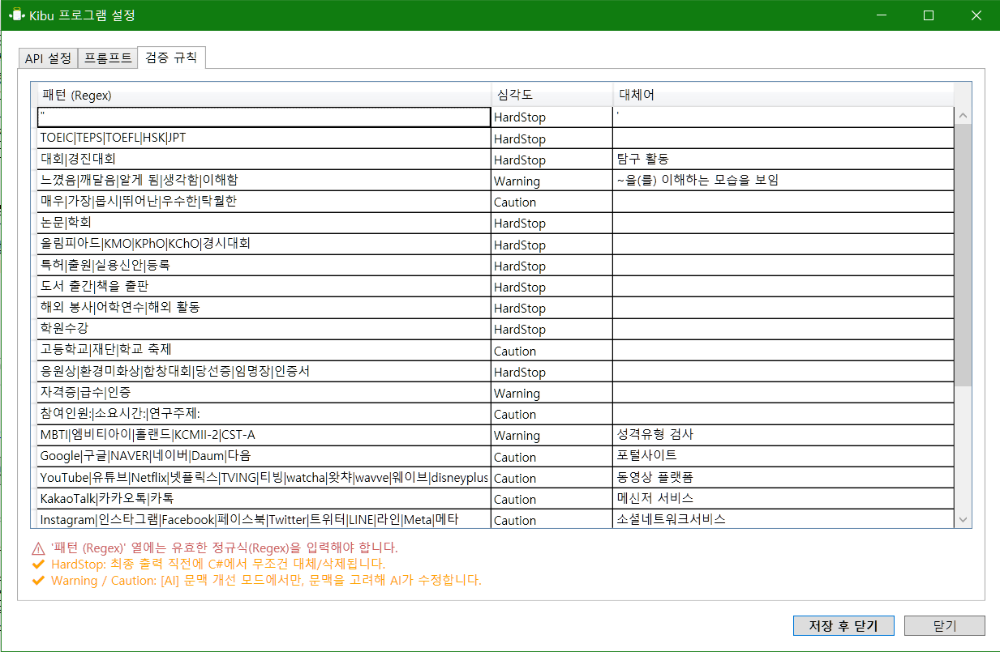

Features
업무의 본질만 남겼습니다
1+N 멀티모달 분석
학생의 텍스트 기록뿐만 아니라, PDF 보고서, 손글씨 활동지 사진까지. Kibu에 내장된 OCR 엔진과 최신 Gemini 모델이 자료를 정밀 분석하여 "학생의 성장이 드러나는 지점"을 찾아냅니다.
- 손글씨 활동지, 스캔된 PDF 인식
- Gemini 1.5 Pro 모델 연동
- 여러 외부 자료 종합 분석 및 요약

지능형 규정 검증 (Audit-Free)
"유튜브 보고 탐구함" → "동영상 플랫폼을 활용하여 탐구함"
AI가 기재 금지어와 주관적 표현을 실시간으로 감지하고 교육적인 언어로 순화합니다.
감사 걱정 없이, 생기부 본연의 내용에만 집중하세요.
- 금지어(대회, 인증시험, 강사명) 자동 치환
- 교육적으로 부적절한 표현 완화

강력한 AI 프롬프트 커스텀
모든 학교와 선생님의 스타일은 다릅니다. 세특, 행발, 진로 등 각 섹션별로 AI의 말투와 작성 방식을 직접 설정하세요. 나만의 노하우가 담긴 '골드 스탠다드' 예시를 학습시킬 수 있습니다.